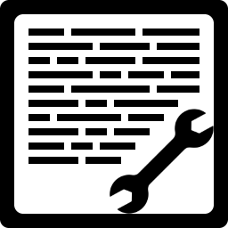
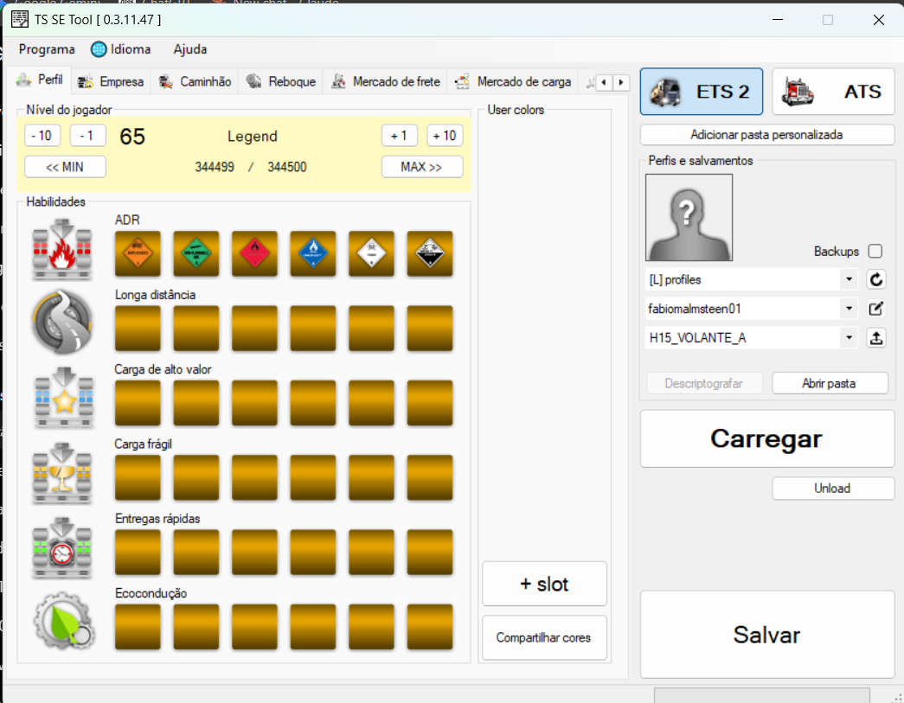
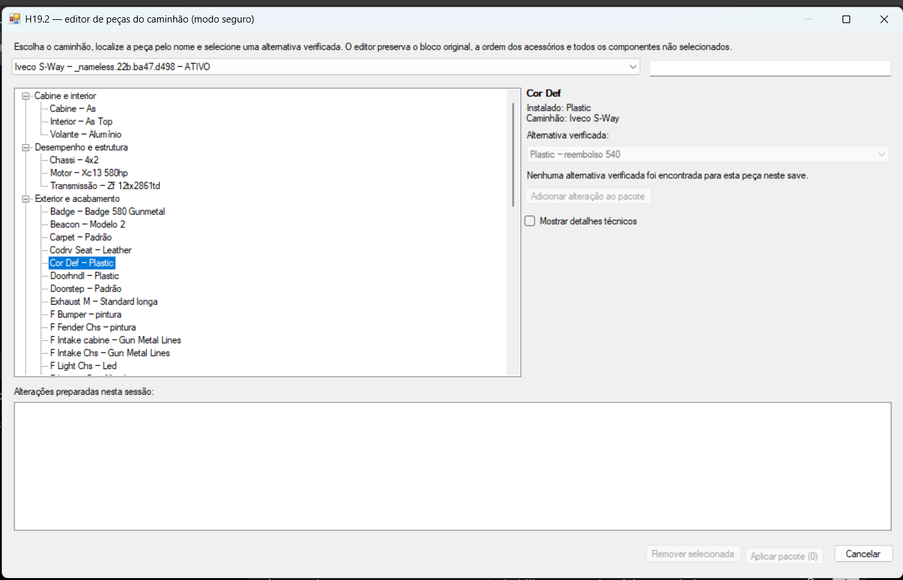

Perfil e empresa
Dinheiro, experiência, habilidades, cores, sede, garagens e cidades visitadas.

Continuação comunitária e protegida do editor de saves para Euro Truck Simulator 2, com backups, validação e alterações cirúrgicas.
Dinheiro, experiência, habilidades, cores, sede, garagens e cidades visitadas.
Reparo, combustível, placas, odômetros, operações em lote e trocas controladas.
Freight/Cargo Market validados, posição e rota GPS sem salvamento automático.
Alternativas verificadas e edição segura das seis habilidades dos motoristas IA.
O writer moderno altera campos existentes e validados, preservando referências, IDs, ordem e contagens. Contratação/demissão, editor bruto de grafos e caminhos de peças não verificados permanecem bloqueados.


Projeto original por LIPtoH. Continuação comunitária mantida por Fabio, sob Apache License 2.0. Projeto independente, sem vínculo ou endosso da SCS Software.